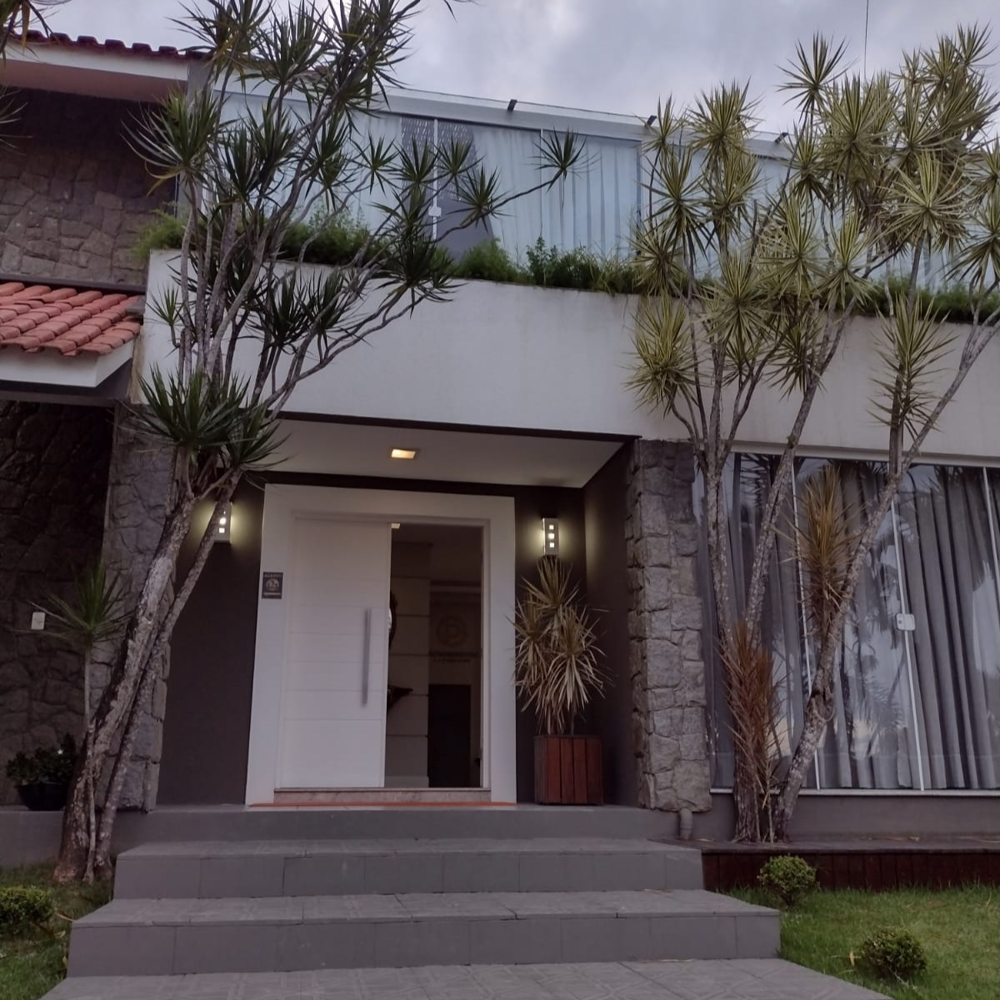
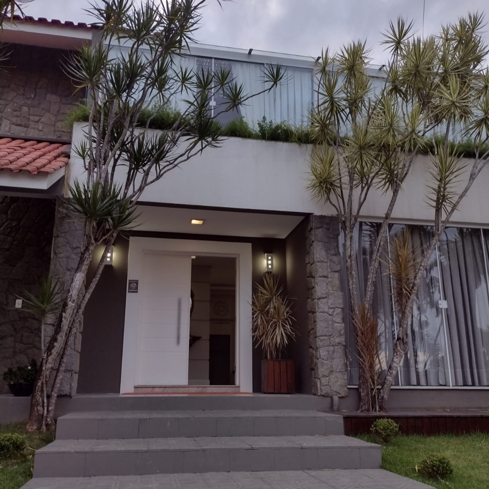

Unidades
PowerGym LifeCare
R. Pref. Reinoldo Alves, 1595 - Passa Vinte, Palhoça - SC, 88132-001
São Lucas
Av. Barão do Rio Branco, 461 - Centro, Palhoça - SC, 88130-101

A neuropsicopedagogia é uma ciência que une a psicologia, a pedagogia e a neurociência. O trabalho da neuropsicopedagoga é, através de estratégias escolhidas cuidadosamente para cada paciente, tratar e solucionar dificuldades cognitivas, facilitando a aprendizagem e o convívio social do mesmo.
A partir dos 3 meses já é possível observar se o desenvolvimento cognitivo está de acordo com a faixa etária. Não há limite de idade e, inclusive, é muito comum que os idosos precisem ser estimulados para que possam ter uma melhor qualidade de vida. Além disso, há síndromes que deterioram progressivamente algumas funções cognitivas, como raciocínio, memória, linguagem e até mesmo habilidades que interferem no dia-a-dia. Ao estimular a parte do cérebro adequada é possível haver uma melhora gradativa na qualidade de vida.
O neuropsicopedagogo atua em pacientes com ou sem diagnóstico. O motivo se dá porque, assim como precisamos exercitar o nosso corpo, é preciso também exercitarmos o nosso cérebro. Em um primeiro momento, é feita uma avaliação, para saber se o desenvolvimento cognitivo está de acordo com a idade, em seguida o paciente é encaminhado para o tratamento mais adequado, que pode envolver diversos profissionais. No caso de incluir sessões neuropsicopedagógicas, é feita uma estimulação através de jogos e atividades na parte do cérebro que encontra-se “adormecida”.
Sabemos cada vez mais que o entorno de cada indivíduo contribui muito para que o seu desenvolvimento esteja de acordo com as suas potencialidades. Dessa forma, em parceria ao trabalho como neuropsicopedagoga, atuo como consultora parental, trabalho que trata-se de analisar os contextos em que o indivíduo está inserido (escolar, familiar e social) criando estratégias para que todos convivam em harmonia.
Inicialmente é feita uma anamnese com a família e uma análise do indivíduo através de alguns testes visando buscar qual será a melhor alternativa para o seu desenvolvimento integral. Havendo necessidade de atendimento neuropsicopedagógico, acontecem semanalmente com duração de 50 minutos.
Sou Carolina Vaz, pedagoga, neuropsicopedagoga, mestra em ciências da linguagem e especialista na educação em diferentes segmentos. Atuante na área desde 1994. Busco estratégias para solucionar dificuldades ou transtornos de aprendizagem para o melhor desenvolvimento de cada indivíduo dentro de suas potencialidades. Trabalho visando o ser humano como um todo, ou seja, no aspecto cognitivo, social e afetivo.
Desde que ingressei no magistério me encantei com o que a educação poderia me oferecer. De lá para cá fiz faculdade de Pedagogia, me habilitei e me especializei para dar aulas em todos os níveis de ensino, além da educação especial, e posteriormente me tornei mestra em Ciências da Linguagem na linha de linguagem e cultura. As dificuldades e transtornos de aprendizagem, assim como a fixação efetiva do conteúdo abordado e permanência do desenvolvimento motor de acordo com a idade sempre foram o meu foco, buscando que cada indivíduo pudesse ter prazer com o processo de aprendizagem. Para me auxiliar nessa busca me utilizo de diferentes métodos que incluíam a música, o lúdico e os jogos como instrumentos essenciais nesse processo.
R. Pref. Reinoldo Alves, 1595 - Passa Vinte, Palhoça - SC, 88132-001
Av. Barão do Rio Branco, 461 - Centro, Palhoça - SC, 88130-101